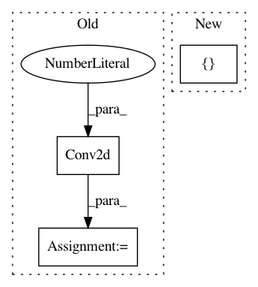

4ee8ae757fd0701f8030f9fc46d6130b6d289123,models/unet/unet_model.py,UnetModel,__init__,#UnetModel#Any#Any#Any#Any#Any#,68
Before Change
self.up_transpose_conv += [nn.ConvTranspose2d(ch, ch, kernel_size=2, stride=2, bias=False)]
self.up_conv += [ConvBlock(ch * 2, ch, drop_prob)]
self.conv2 = nn.Sequential(
nn.Conv2d(ch, ch // 2, kernel_size=1),
nn.Conv2d(ch // 2, out_chans, kernel_size=1),
nn.Conv2d(out_chans, out_chans, kernel_size=1),
)
def forward(self, input):
Args:
After Change
self.up_conv += [ConvBlock(ch * 2, ch, drop_prob)]
ch //= 2
self.up_transpose_conv += [TransposeConvBlock(ch * 2, ch)]
self.up_conv += [
nn.Sequential(
ConvBlock(ch * 2, ch, drop_prob),
nn.Conv2d(ch, self.out_chans, kernel_size=1, stride=1),
In pattern: SUPERPATTERN
Frequency: 3
Non-data size: 3
Instances
Project Name: facebookresearch/fastMRI
Commit Name: 4ee8ae757fd0701f8030f9fc46d6130b6d289123
Time: 2020-02-24
Author: tulliemurrell@gmail.com
File Name: models/unet/unet_model.py
Class Name: UnetModel
Method Name: __init__
Project Name: tensorlayer/tensorlayer
Commit Name: b7628060e6ae3c23f37a21d47d625609074dda24
Time: 2018-03-13
Author: dhsig552@163.com
File Name: tests/test_layers_convolution.py
Class Name:
Method Name:
Project Name: eriklindernoren/PyTorch-GAN
Commit Name: 54d89c639d8d6d72e5ada833c00762b82ba63348
Time: 2018-05-26
Author: eriklindernoren@gmail.com
File Name: implementations/bicyclegan/models.py
Class Name: Discriminator
Method Name: __init__